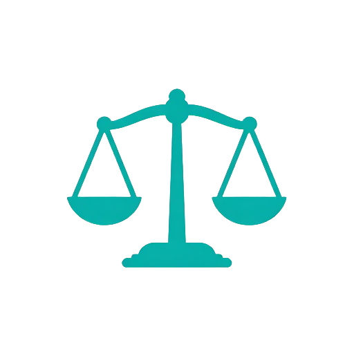
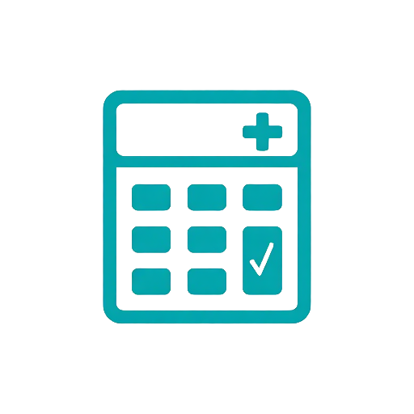
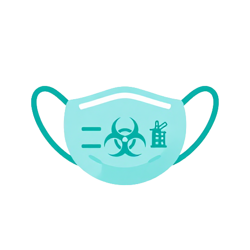
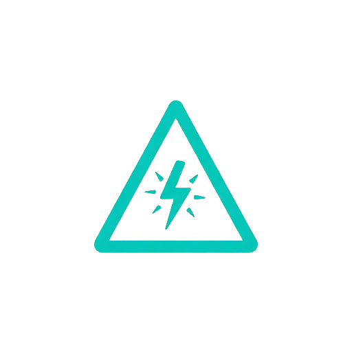
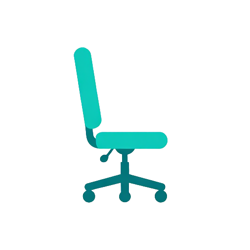
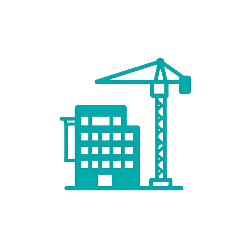
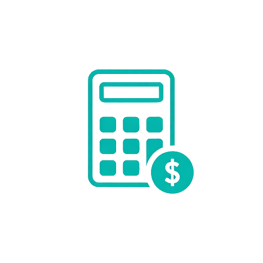
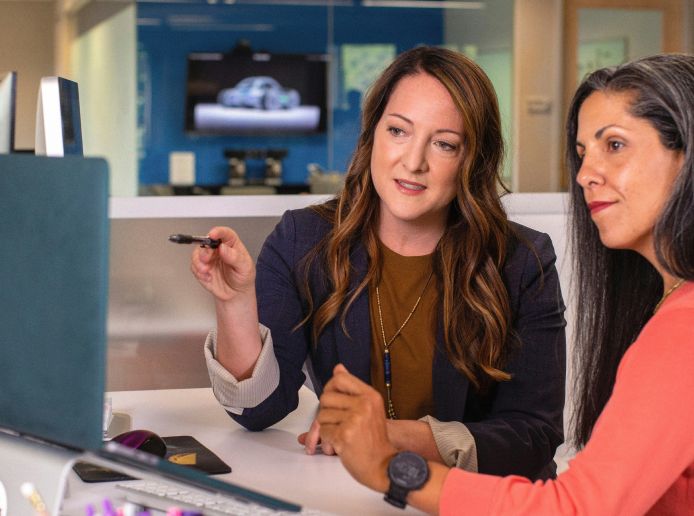

TRADUZINDO CIÊNCIA EM PROVA
Excelência técnica. Imparcialidade. Verdades que constroem justiça.
Práticas sustentáveis que minimizam impactos ambientais.
Práticas sustentáveis que minimizam impactos ambientais.
Práticas sustentáveis que minimizam impactos ambientais.
Há 10 anos traduzindo ciência em prova e contribuindo para a justiça com verdade, técnica e responsabilidade. Oferecemos todos os tipos de perícias para atender às mais diversas necessidades judiciais e extrajudiciais.
Veja o CurriculumTodos os tipos de perícias para atender às mais diversas necessidades judiciais e extrajudiciais

Análises técnicas em processos judiciais, subsídios periciais e assistência técnica em demandas legais.
Avaliação médica, valoração do dano corporal, aptidão laboral, nexo causal e incapacidade.

Análise técnica de faturas, procedimentos e glosas, com verificação de conformidade e economicidade.

Avaliação técnica das condições de trabalho, com identificação de agentes nocivos.

Análise de atividades e operações perigosas, conforme NR-16 e legislação aplicável.

Análise das condições de trabalho, adequação de postos e fatores de risco ergonômicos.

Análises técnicas em edificações, estruturas, patologias construtivas e avaliações de imóveis.
Reconstrução de acidentes, análise de dinâmica e avaliação de danos materiais.

Análise de documentos contábeis, apuração de haveres e cálculo de lucros cessantes.
Investigação de crimes cibernéticos, análise de dispositivos e recuperação de dados.
Análise de assinaturas, autenticidade de documentos e detecção de fraudes.
Análise, autenticação e comparação de áudios, vídeos e imagens.
Há 10 anos traduzindo ciência em prova e contribuindo para a justiça com verdade, técnica e responsabilidade.
